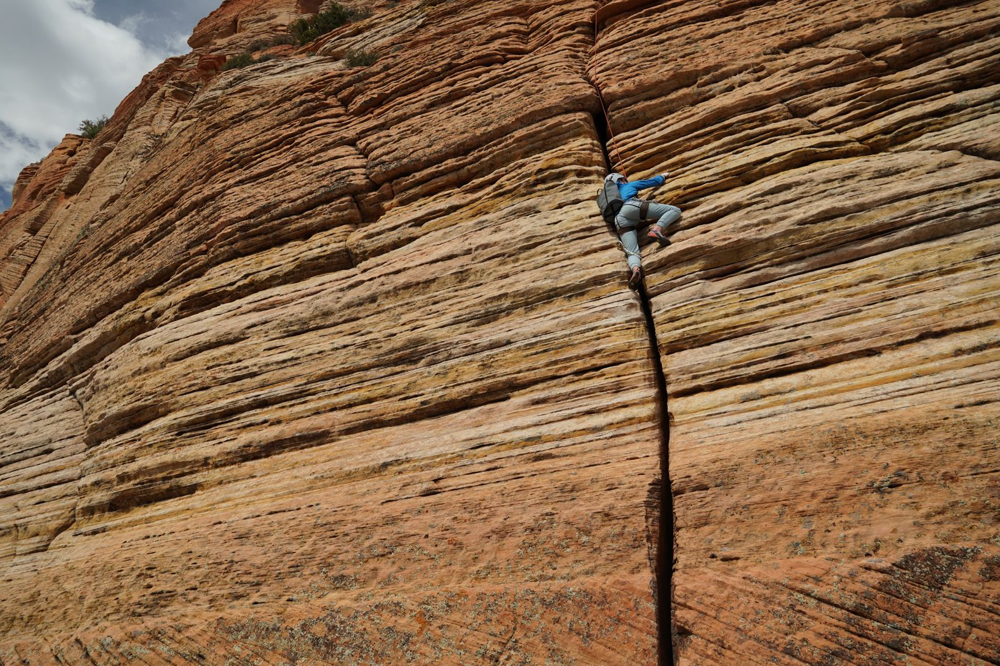
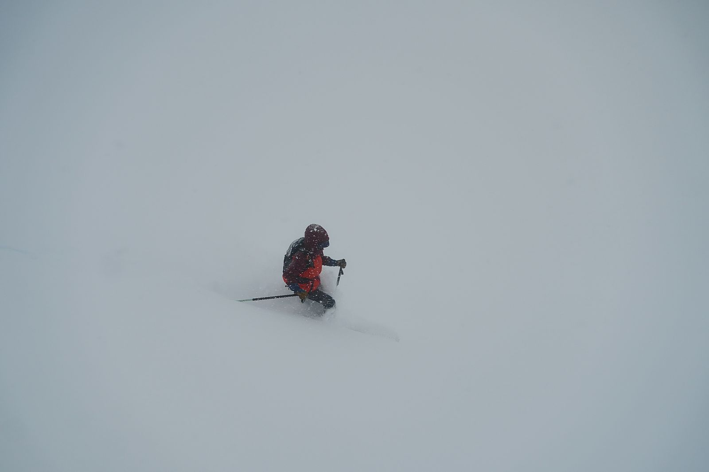
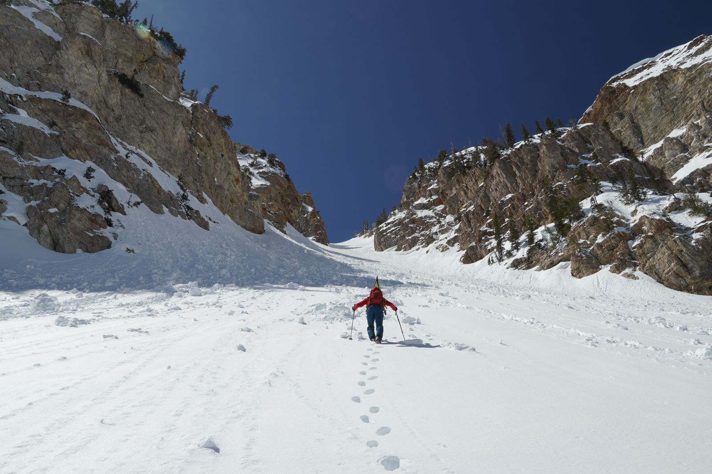

Great works endure because they wrestle with what does not change
Freedom, suffering, duty, meaning, love. In my spare time I read literature and study philosophy, and I find myself in the great works more often than I expect to. Dostoevsky's Brothers Karamazov and Herbert's Dune remain touchstones.
The existential clarity of Kierkegaard and Camus shaped how I decide anything at all: take the leap with clear eyes, and let the struggle toward the heights be enough.
- DostoevskyThe Brothers Karamazov
- HerbertDune
- KierkegaardFear and Trembling
- CamusThe Myth of Sisyphus
- KierkegaardThe Lily of the Field and the Bird of the Air
Build the whole thing, then own it
I am a synthesizer rather than a specialist. What holds my attention is the full arc of a problem: finding it, winning the argument for it, building the thing, and being responsible for what happens next.
Most of my work has been teaching systems to talk to each other, and lately teaching them to think a little. I build guided by a philosophy rather than for building's sake, and I treat what I ship as a hypothesis the world gets to answer. Next, an MBA at Yale, to widen the scope of what I can own.
No cathedral more sublime, no crucible more stern
Most of my time away from a laptop is spent under the sun, even if transitively by way of thick cloud or fog. The untouched natural world is the one place that still asks something of you, and I go to it partly for the reminder that existence is not guaranteed.
The climbs are committing, the ski lines are steep, and the adventures are almost always better for the people I do them with.



Ideas are hypotheses; writing is how I test them
I write about philosophy, technology, and the odd shapes of social life. Writing is where what the mountains and the work teach me gets put into words and released, and where the reader gets to talk back.